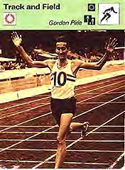
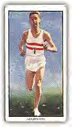

Гордон Пири жил с нами несколько лет до своей смерти в 1991 году и оказал на всех нас огромное влияние. Одним из качеств Гордона, производившим в особенности сильное впечатление, был уровень его физической подготовки и желание совершенствоваться во всем, что касалось спорта. Яркий пример этого он показал на лесозаготовках в Гемпшире, когда к своей гордости смог повалить намного больше деревьев, чем напарник, который был моложе него на 30 лет. Другой пример был продемонстрирован после моего согласия «пробежаться» с Гордоном вдоль заброшенного железнодорожного полотна. В то время я был вдвое моложе него и считал себя неплохо подготовленным. Однако я немного поостыл, когда увидел, что за то время, пока я преодолел намеченный отрезок дистанции 1 раз, Гордон проделал путь втрое больший! После этого унизительного забега, я выслушал комментарии о своей спортивной обуви и технике бега (если таковая была).
Первый вариант рукописи этой книги был написан Гордоном в типичной для него манере – в один присест, за 24 часа. Пятидюймовую дискету с рукописью Гордон засунул в спортивную сумку и затем обнаружил её там сложенной пополам. В результате мне потребовалось провести выходные, чтобы восстановить данные. Я разрезал мятую дискету на части и наклеил их на новую, ухитрившись собрать из кусков один ASCII – файл. После этого, строка за строкой, я расшифровывал текст, переводя его в Word-документ. Гордон наблюдал за процедурой с загадочной улыбкой, которая всегда появлялась на его лице, когда он встречал очередной вызов. Окончательное редактирование началось вскоре после смерти Гордона, и готовый манускрипт теперь стал доступен для всех нас, реализовав тем самым завещание Пири опубликовать его книгу, для того, чтобы она помогла в тренировке новым поколениям бегунов.
В целом, процесс подготовки книги от начальной стадии до её нынешнего состояния занял 5 лет, и для меня это стало достаточно крупным проектом, который я сам для себя определил и теперь счастлив завершить. Как вы увидите, книга достаточно противоречива и содержит некоторые радикальные идеи (одна из причин, по которым она издается самиздатом!), но я считаю, что её издание – необходимая дань уважения Гордону Пири. Книга сможет объяснить, почему он стал таким выдающимся бегуном и даст другим возможность повторить его успех. Возможно, читателю будет интересно узнать, что Гордон написал ещё две книги: "Running Wild" (издательство W H Allen, London, 1961), и "The Challenge of Orienteering" (Pelham Books Limited, 1968). В дополнение к этому, писатель Дик Бут недавно опубликовал подробную биографию Гордона Пири “The Impossible Hero” (Corsica Press, London, 1999), вы можете заказать книгу на http://www.bookshop.co.uk и http://www.amazon.co.uk. И, наконец, я с нетерпением жду ваших отзывов о книге, а также любую новую информацию о Гордоне. Буду рад получить её по факсу (+44 (0)1256-760100), письмом (P.O. Box 7210, Hook RG27 9GE, United Kingdom) либо e-mail (john@johngilbody.com). Кроме этого, посетите мой ресурс о Гордоне Пири по адресу http://www.gordonpirie.com. Рекомендую подписаться на новости: rec.running.
Старые видеозаписи Гордона вы можете найти на http://www.movietone.com и http://www.footage.net. Счастливого чтения!
Др. Джон Гилбоди

В течение 45 лет мне приходится бегать практически во всех уголках мира, и везде ко мне обращаются бегуны за советом – как избежать травм и исправить технику бега. Обращаются все – от молодых до ветеранов, от новичков до чемпионов. Чтобы удовлетворить этот огромный интерес я решил написать настоящую книгу. Целое поколение бегунов стало жертвой неверной информации, распространяемой производителями спортивной обуви и псевдо-экспертами, выставляющими себя в популярной спортивной прессе в качестве авторитетных специалистов. Некоторые из этих бегунов уже никогда не вернутся к занятиям бегом. К сожалению, неверная информация повела по ложному пути многих спортсменов, и в результате этого они были либо жестоко травмированы, либо полностью разочаровались в занятиях спортом.
Эта книга стала продолжением моей 45-летней спортивной деятельности, которая заключалась в лечении травмированных атлетов и превращении медленных бегунов в быстрых. Она также написана для одаренных спортсменов, которые хотели бы развить свои способности до такого уровня, который позволил бы выигрывать крупные международные соревнования.
Я считаю настоящей трагедией то, что многие очень одаренные бегуны лишь немного недотягивают до уровня великих чемпионов и не могут прорваться на вершину спортивной пирамиды. Они терпят неудачу либо из-за недостаточного владения тактикой, необходимой для выигрыша соревнований, либо их техника не позволяет ускориться в критические моменты забега, например они не могут применить мощный финишный спурт, "Coup-de-Grace", который позволил бы на финишной прямой оставить позади всех соперников (Coup-de-Grace – “удар милосердия", которым добивали смертельно раненных – прим. пер.). Если вы атлет, который хочет стоять на высшей ступени пьедестала почета, то должны быть умнее своих соперников, более напряжённо тренироваться, более жёстко соревноваться и никогда не сдаваться ни на какой стадии забега. Эта книга начнет вести вас к вершинам бега, которых вы хотите достичь.
Я надеюсь, что она поможет бегунам освободиться от неверной информации и ненужной коммерциализации, которые вредят развитию спорта и от которых в последние годы пострадали миллионы бегунов.
Бег это спорт и игра, которые я люблю.
Удачи вам в достижении успеха. Ведь всё это – радость бега.
